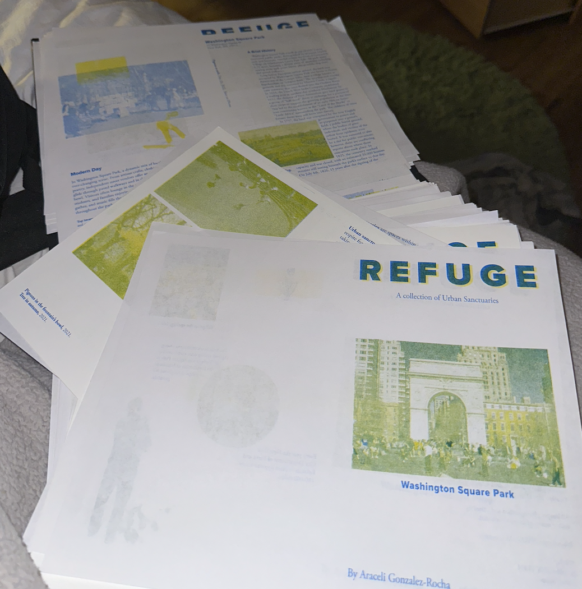
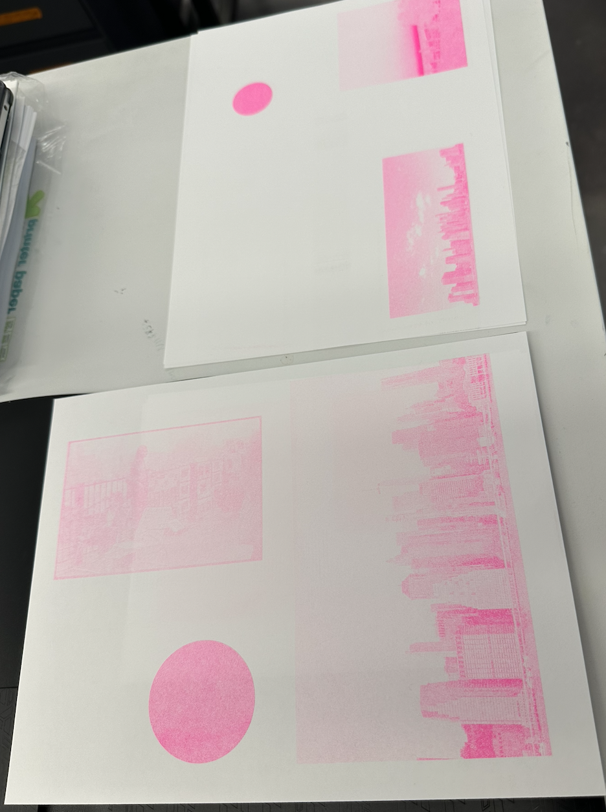
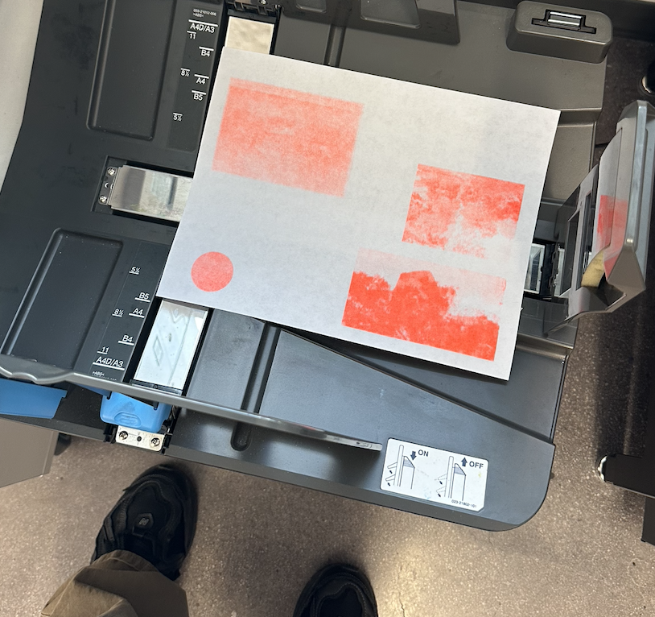
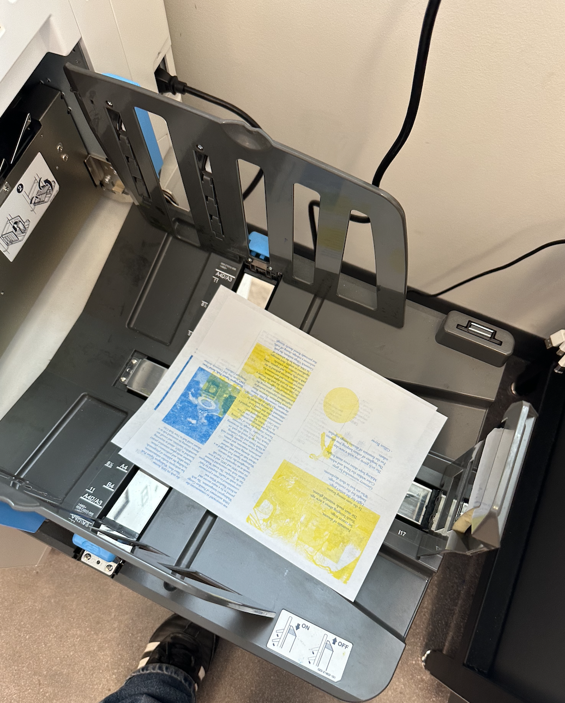
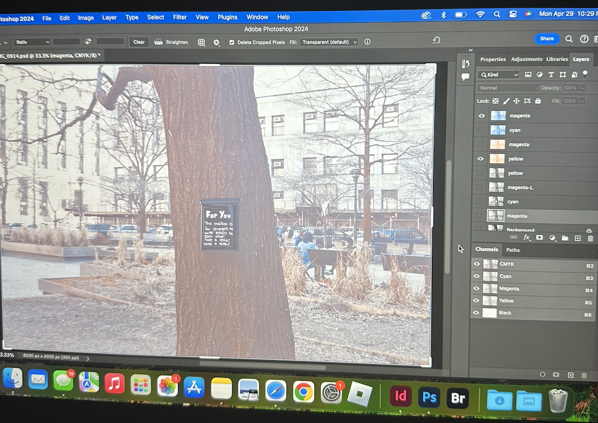
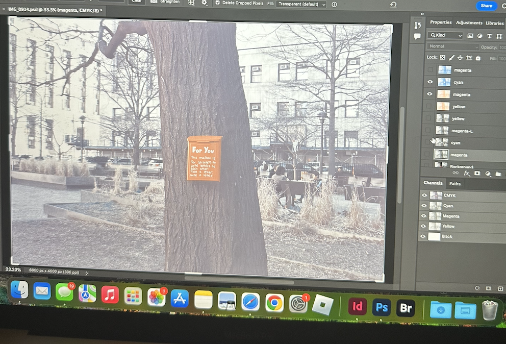

week 15 [ apr. 29, 24 ]
this week i printed out all my zines. it took around 3 days, perhaps 2-3 hrs each day. i made many mistakes with the first zine but by the third zine, the processs went a lot faster.




i then focused on printing for the photo installation. i decided to not just go with the files i already had prepared for the zine for the photos. i instead experimented with different color combinations and just what colors made the details show the best. i printed on a tabloid size and had to organize it in a new indesign file. i also finally recived my photo frames in the mail for the installation.
